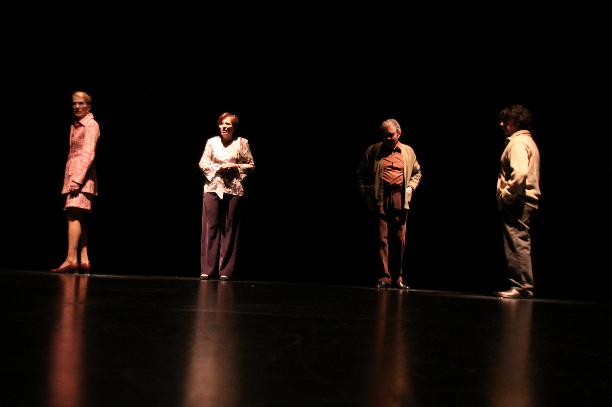

Retrouvez l'ensemble des créations de la Compagnie Le Rocher des Doms depuis sa fondation en 1988. Plus de trente-cinq années de création théâtrale, de Brecht à Calaferte, de Racine à Labiche, portées par une troupe passionnée.
Louise Michel — Louise Maboul

Un hommage théâtral à Louise Michel. Le spectacle permet de (re)découvrir Louise Michel et une période trop souvent méconnue de l'histoire de France.
La Fille Bien Gardée

Cinq comédiens aguerris, une violoncelliste rompue au spectacle vivant, sur un texte virevoltant d'Eugène Labiche, inspiré de l'énergie des farces de Molière.
Poil de Carotte

Adaptation du roman de Jules Renard par la compagnie.
Les Miettes
Adaptation de l'œuvre de Louis Calaferte. Jeu : Laurence Boyenval (Choupette) et Sylvain Marmorat (Choupet).
Clap et Black Out
D'un personnage à l'autre, comme on enlève un chapeau, deux comédiens nous emmènent visiter la vie, ses cruautés, ses cocasseries et ses absurdités par la lorgnette de Louis Calaferte.
Fuga #Oratorio#
Deux couples séparés par leurs différences sociales mais réunis par un destin similaire. La mise en scène crée une cage virtuelle de lumière où les personnages se font écho sans s'adresser jamais directement la parole.
Les Écraignes
Spectacle inspiré de la tradition orale bourguignonne. Tournées en été dans le Parc National de Forêts.
Hommage au Maréchal de Lattre
Lecture-spectacle rendant hommage au Maréchal de Lattre de Tassigny.
Les Derniers Devoirs
Jeu : Laurence Boyenval (Juliette), Sylvain Marmorat (Henri).
Phèdre ~ Epilogue
Adaptation libre et contemporaine de la tragédie de Racine.
L'Amante Anglaise
L'Histoire d'Amour du Siècle
Le Nouveau Monde de Pilick

Britannicus
Vue d'ensemble / Historique
Toutes les créations de la Compagnie Le Rocher des Doms depuis 1988 :
| Année | Spectacle | Auteur | Mise en scène |
|---|---|---|---|
| 1988 | Le mendiant ou le chien mort | Bertolt Brecht | |
| 1989 | La surface de réparation | Raymond Dutherque | André Batisse |
| 1990 | En ville, il y a une fête | Brecht, Schiller | Catherine Lebranchu |
| 1991 | Théodore / M. Badin / Les Boulingrins | Courteline | Aldo Magno |
| 1991 | Pedro et le Capitaine | Mario Benedetti | Doride Salti |
| 1994 | L'Amour en Visites | Alfred Jarry | Sylvain Marmorat |
| 1997 | Baudelaire Nadar | Doride Salti | Doride Salti |
| 1998 | La porte d'Harmonie | Frédérique Gagnol | Sylvain Marmorat |
| 1999 | La Chasse aux rats | Peter Turrini | François Jacob |
| 1999 | Histoire du Vieux Temps | Guy de Maupassant | Valéry Forestier |
| 2000 | Les Sincères | Marivaux | Stéphane Cavallini |
| 2000 | Far-Craf | Pinter, Ghelderode, Buzzati | Pierre Yanelli |
| 2001 | Phèdre & Hippolyte | Racine | Sylvain Marmorat |
| 2001 | La nuit juste avant les forêts | B.-M. Koltès | Valéry Forestier |
| 2003 | L'Histoire du Soldat | Ramuz | Sylvain Marmorat |
| 2003 | La Princesse et le Camionneur | Olivier Taffin | Valéry Forestier |
| 2005 | Clap et Black Out | L. Calaferte | Valéry Forestier |
| 2005 | La Bataille de Waterloo | L. Calaferte | Sylvain Marmorat |
| 2006 | Travaux de territoire / Opéra Bleu | L. Calaferte | Sylvain Marmorat |
| 2007 | Britannicus | Jean Racine | Sylvain Marmorat |
| 2008 | Le siège de Talant | Ghelderode (adapt.) | Marmorat, Yanelli |
| 2009 | Les Derniers Devoirs | L. Calaferte | Sylvain Marmorat |
| 2009 | Fuga #Oratorio | J.-M. Baudoin | Sylvain Marmorat |
| 2010 | Le Médecin Volant | Molière | Pierre Yanelli |
| 2011 | Phèdre ~Epilogue | Racine (adapt.) | Marmorat, Fornier |
| 2012 | L'Amante Anglaise | M. Duras | Marmorat/Lonsdale |
| 2013 | L'Histoire d'Amour du Siècle | M. Tikkanen | Sylvain Marmorat |
| 2014 | Les Miettes | L. Calaferte | Caroline Fornier |
| 2015 | Le Nouveau Monde de Pilick | Annick Terriot | Sylvain Marmorat |
| 2016 | La Fille Bien Gardée | Labiche | Sylvain Marmorat |
| 2017 | Poil de Carotte | Jules Renard | Sylvain Marmorat |
| 2018 | Le Songe d'une Nuit d'été | Shakespeare | Sylvain Marmorat |
| 2020 | Louise Michel # Louise Maboul | Boyenval & Marmorat | |
| 2023 | Le Petit Bonnet Rouge | Laurence Boyenval |